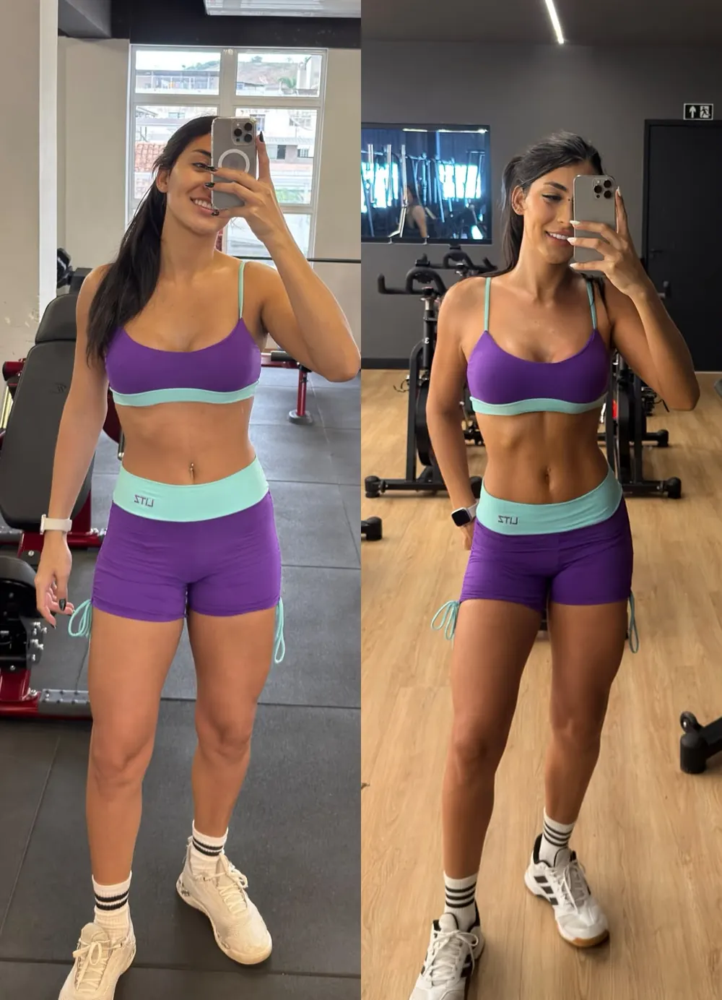
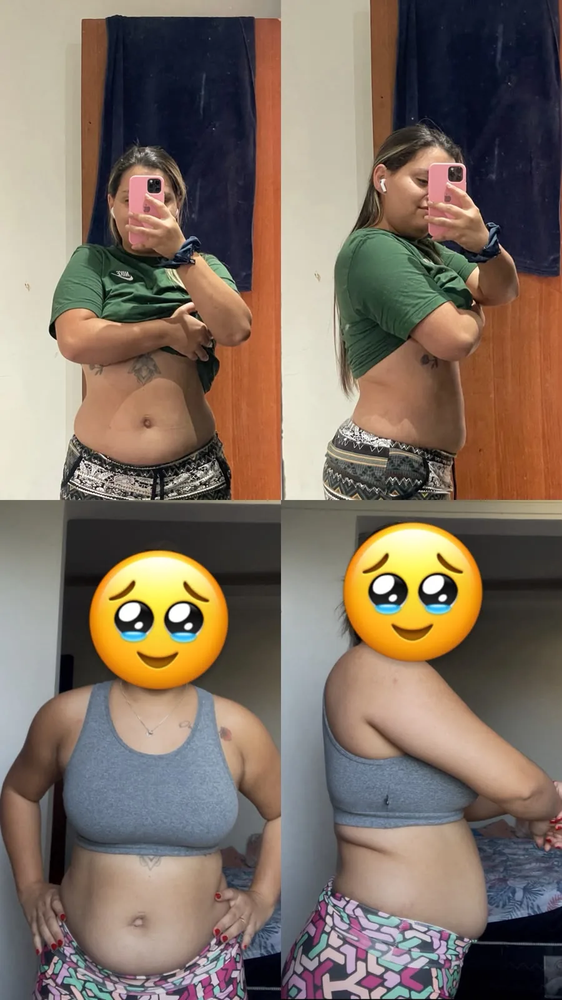
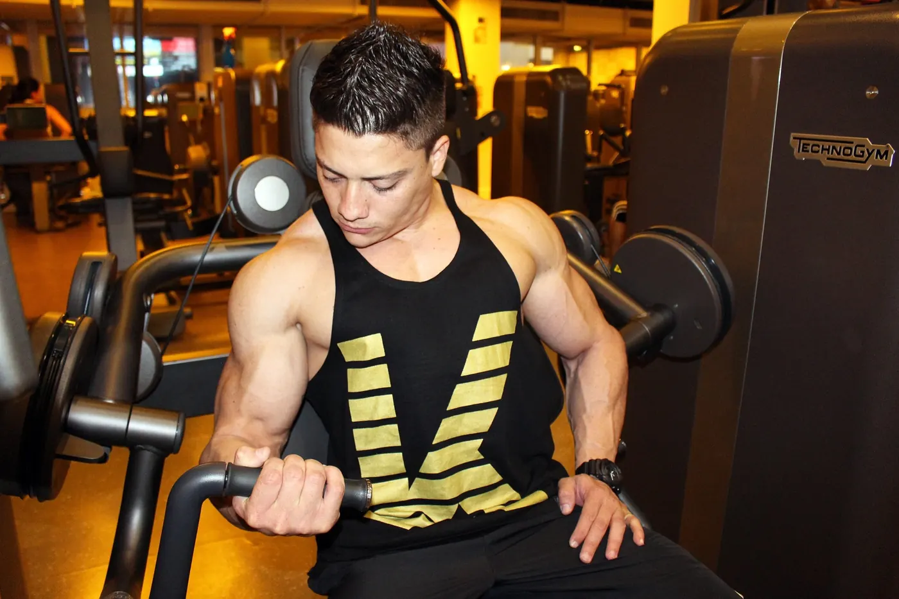
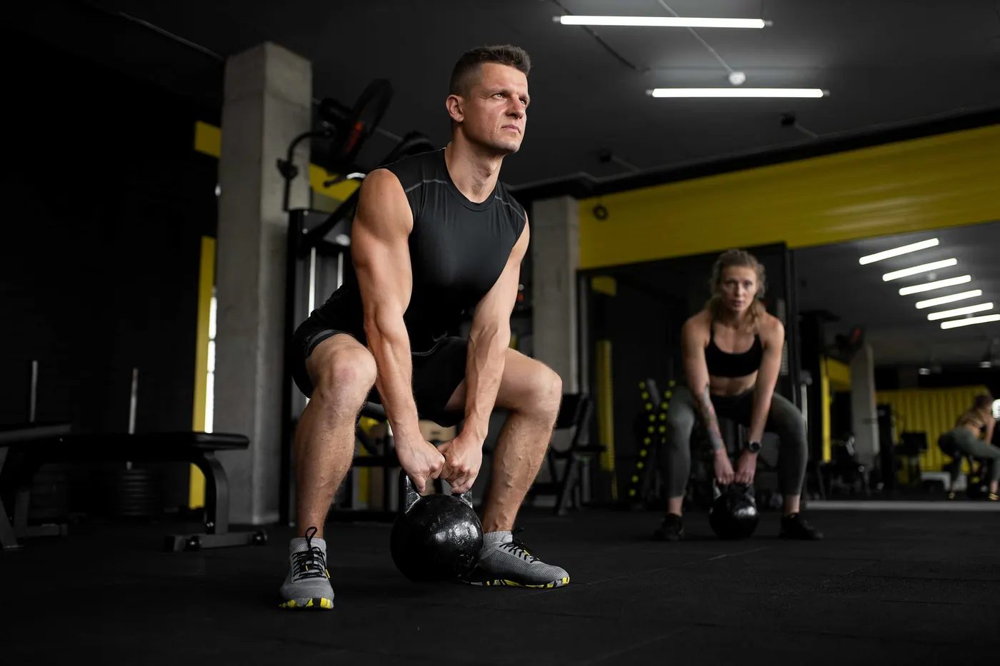
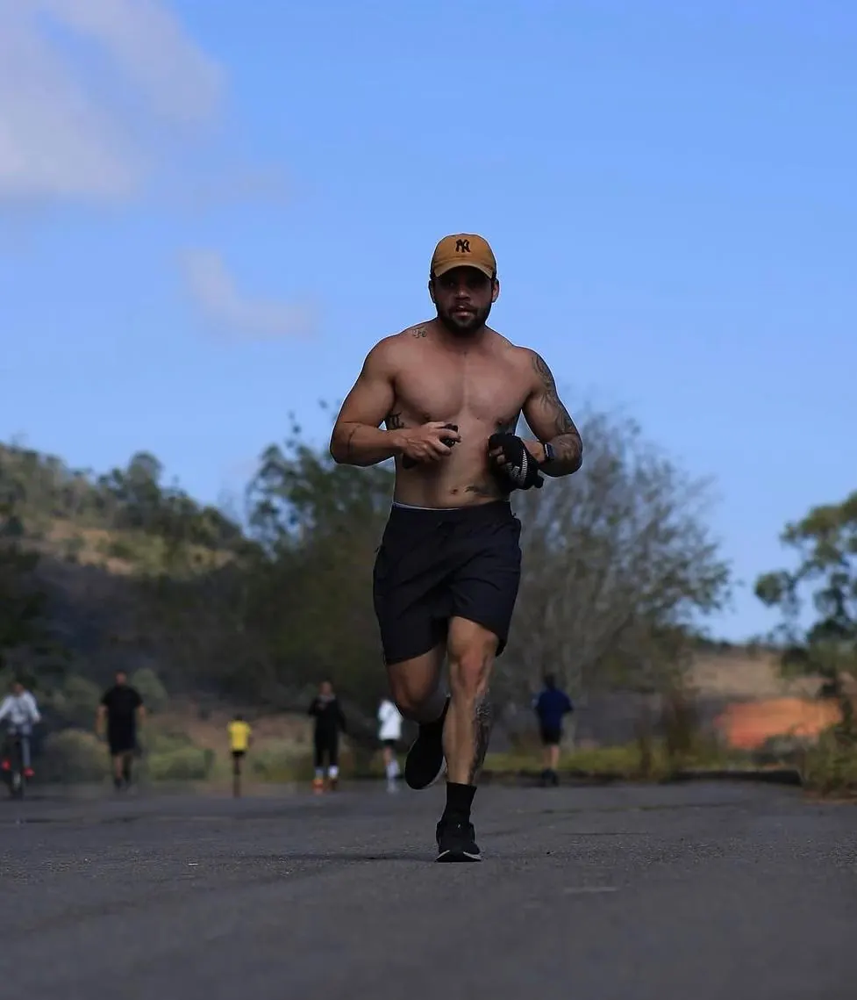

Lucas Fernandes apresenta
Seu próximo
nível
começa agora.
Emagrecimento e hipertrofia com orientação personalizada, para homens e mulheres em diferentes fases da vida.
Falar com o LucasPersonal trainer · CREF-MG 049660 · Juiz de Fora, MG e online
Sinopse
Treino bom é o que cabe na sua vida. Sem fórmulas mágicas e sem copiar o treino de outra pessoa: a gente entende seu momento, define objetivos possíveis e transforma cada sessão em um passo consistente.
- Direção
- Estratégia pessoal, pensada para seu objetivo, seu nível e sua rotina.
- Montagem
- Evolução acompanhada, com ajustes ao longo do caminho.
- Roteiro
- Constância possível: um ritmo que dura.
Ficha técnica
- Elenco ativo
- 7 alunos presenciais
13 alunos online - Locação
- Juiz de Fora, MG
e onde você estiver - Especialidade
- Emagrecimento
e hipertrofia - Formação
- Bacharel em Educação Física (2023)
Pós em Fisiologia e Biomecânica (2024)
Como funciona,
cena a cena.
- Cena 1
Conversa
Você conta seu objetivo e sua rotina pelo WhatsApp. Sem compromisso.
- Cena 2
Plano
Um treino desenhado para o seu nível, presencial ou online.
- Cena 3
Treino
Orientação de movimento, sessão a sessão, de perto ou à distância.
- Cena 4
Ajustes
O plano acompanha a sua evolução e muda quando precisa mudar.
Resultados
Antes e depois,
aluno por aluno.
Cada evolução é individual e nasce de treino consistente, estratégia personalizada e acompanhamento próximo.
Quero começar minha evolução
Antes Depois
Depois AntesCada corpo responde de um jeito: os resultados variam conforme rotina, alimentação e dedicação. Imagens publicadas com autorização das alunas e dos alunos.
Treinar é movimento.



Fotos ilustrativas de treino.
Oi, eu sou
Lucas Fernandes.
Personal trainer especialista em emagrecimento e hipertrofia. Meu trabalho é ajudar você a treinar com confiança e propósito, respeitando seu momento e sua rotina.
Registro profissional: CREF-MG 049660.
Qual formato
combina com você?
Responda em 20 segundos. As respostas viram uma mensagem pronta para o Lucas: você confere e envia.
Antes de começar,
vamos esclarecer.
Veja como funciona o acompanhamento e fale diretamente com o Lucas para encontrar o formato adequado à sua rotina.
TIRAR DÚVIDAS NO WHATSAPPOnde posso treinar com o Lucas?
O atendimento presencial é em Juiz de Fora, MG. Também há acompanhamento online.
O acompanhamento é para iniciantes?
O plano é personalizado para o seu momento, nível de experiência, objetivo e rotina.
Quais objetivos posso trabalhar?
O trabalho é voltado principalmente para emagrecimento e hipertrofia, para homens e mulheres em diferentes fases da vida.
Quanto custa o acompanhamento?
O valor varia de acordo com o formato e a frequência do plano. Converse com o Lucas para conhecer as opções disponíveis.
Como faço para começar?
Envie uma mensagem pelo WhatsApp contando seu objetivo e se prefere atendimento presencial ou online. O Lucas explica os próximos passos.
Créditos finais
Direção de treinoLucas Fernandes
ProtagonistaVocê
Seu plano começa
com uma conversa.
O investimento varia conforme o formato e a frequência do acompanhamento.